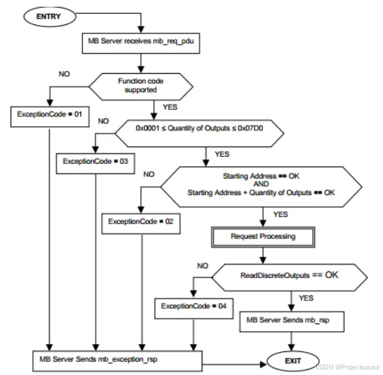

Modbus 通信协议详解
[toc]
一、概述
Modbus 是由 Modicon（现为施耐德电气公司的一个品牌）在 1979 年发明的，是全球第一个真正用于工业现场的总线协议。ModBus 网络是一个工业通信系统，由带智能终端的可编程序控制器和计算机通过公用线路或局部专用线路连接而成。其系统结构既包括硬件、亦包括软件。它可应用于各种数据采集和过程监控。为更好地普及和推动 Modbus 在基于以太网上的分布式应用，目前施耐德公司已将 Modbus 协议的所有权移交给 IDA（Interface for Distributed Automation，分布式自动化接口）组织，并成立了 Modbus-IDA 组织，为 Modbus 今后的发展奠定了基础。
在中国，Modbus 已经成为国家标准，并有专业的规范文档，感兴趣的可以去查阅相关的文件，详情如下：标准编号为:GB/T19582-2008文件名称:《基于 Modbus 协议的工业自动化网络规范》，主要包含三个部分：
- GB-T19582.1-2008 第 1 部分：Modbus 应用协议
- GB-T19582.1-2008 第 2 部分：Modbus 协议在串行链路上的实现指南
- GB-T19582.1-2008 第 3 部分：Modbus 协议在 TCP/IP 上的实现指南
二、Modbus 的作用
Modbus 协议是一种通信协议，而且是一种开放协议，因此广泛地用于在工业自动化系统中实现设备之间的数据交换。它是最常用的串行通信协议之一，广泛应用于监控和控制设备之间的通信。简而言之，它是用于在电子设备之间的串行线路上传输信息的方法。请求信息的设备被称为 Modbus 客户端，提供信息的设备是 Modbus 服务器。Modbus 支持==单主机，多个从机==，在标准 Modbus 网络中，有一个客户端和多达 247个服务器，每个服务器都有从 1 到 247 的唯一服务器地址。客户端还可以向服务器写入信息。
Modbus 通常用于从仪器和控制设备传输信号到主控制器或数据采集系统，例如用于测量温度和湿度并将结果传输到计算机的系统。Modbus 通常用于将监控计算机与远程终端单元（RTU）连接在一起，这在监控和数据采集（SCADA）系统中使用。
Modbus 协议简单易于实现，传输效率高，因此在工业自动化领域得到广泛应用。它支持多个设备之间的并行通信，可以实现分布式控制系统的互联互通。同时，Modbus 协议还具有跨平台、跨厂商的特点，使得不同厂商的设备可以进行互操作。
三、Modbus 的工作原理
Modbus 是一主多从的协议，如下图所示：

主控发出的数据里，必定含有如下信息：
- 设备地址：你要访问从设备 1，还是访问从设备 2。
- 访问哪类寄存器，是读还是写，只访问 1 个寄存器，还是多个寄存器：这被称为功能码。
- 起始寄存器地址、寄存器数量：这在数据里定义。
- 为了保证数据传输的可靠，还附带有 CRC 检验码。
1、四种数据类型
Modbus协议规定，进行读写操作的数据类型，按照读写属性和类型可分为以下4种：
- 离散量输入（Discretes Input）：1位，只读
- 线圈（Coils）：1位，读写
- 输入寄存器（Input Registers）：16位，只读
- 保持寄存器（Holding Registers）：16位，读写
| 内存区块 | 数据类型 | 主设备访问 | 从设备访问 | 内容 |
|---|---|---|---|---|
| 离散量输入 | 布尔 | 只读 | 读写 | I/O 系统提供这种类型数据 |
| 线圈 | 布尔 | 读写 | 读写 | 通过应用程序改变这种类型数据 |
| 输入寄存器 | 无符号双字节整型 | 只读 | 读写 | I/O 系统提供这种类型数据 |
| 保持寄存器 | 无符号双字节整型 | 读写 | 读写 | 通过应用程序改变这种类型数据 |
| 寄存器种类 | 说明 | 与PLC类比 | 举例说明 |
|---|---|---|---|
| 线圈状态(Coil Status) | 输出端口。可设定端口输出状态，也可以读取该位的输出状态。可分为两种不同的执行状态，例如保持型或边沿触发型。 | DO(数字量输出) | 电磁阀输出、 MOSFEF输出、LED显示等 |
| 离散输入状态(Discrete Input Status) | 输入端口。通过外部设定改变输入状态，可读但不可以写。 | DI(数字量输入) | 拨码开关、接近开关等 |
| 保持寄存器(HoldingRegister) | 输出参数或保持参数，控制器运行时被设定的某些参数，可读可写。 | AO(模拟量输出) | 模拟量输出设定值，PID运行参数，变量阀输出大小，传感器报警上限下限 |
| 输入寄存器（Input Register） | 输入参数。控制器运行时从外部设备获得的参数，但可读不可写。 | AI（模拟量输入) | 模拟量输入 |
2、三种工作模式
Modbus 协议主要有三种形式：Modbus ASCII、Modbus RTU 和 Modbus TCP/IP。Modbus ASCII 和 Modbus RTU 是基于串行通信的协议，而 Modbus TCP/IP 则是基于以太网的协议。
Modbus ASCII是一种文本协议，使用 ASCII 码表示数据。它使用起始字符（“**:**”）、从站地址、功能码、数据、结尾字符（换行符 CR/LF）等字段来定义通信内容，并采用的是 LRC 校验算法。数据以 ASCII 码的形式传输，通常是通过 RS-232 或 RS-485 等串行通信接口进行传输。Modbus RTU是一种二进制协议，使用二进制码表示数据。它采用起始字符、从站地址、功能码、数据等字段来定义通信内容，并使用 CRC 校验位来保证数据的完整性。Modbus RTU通常通过 RS-232、RS-485 或 RS-422 等串行通信接口进行传输。Modbus TCP/IP是一种基于以太网的协议，使用 TCP/IP 协议栈进行通信。它使用以太网帧作为数据传输的封装，通过 IP 地址和端口号来标识设备。其占用的是 502 端口，数据帧主要包括两部分：MBAP（报文头）+PDU（帧结构），数据块与串行链路是一致的。Modbus TCP/IP可以通过以太网、无线局域网等网络介质实现设备之间的远程通信。
补充：
- RS-485：半双工收发接口，这是最为常用的
Modbus物理层，信号采用差分电平编码，用一对双绞线现场布线，抗干扰性能也不错- RS-422：全双工收发接口，这种物理层也有比较多的应用，信号采用差分电平编码，需要两对双绞线现场布线，抗干扰性能也不错。与 RS-485 相比，其优势在于可以实现全双工，通信的效率高些，所需要的代价就是现场布线需要两对双绞线，增加了一定的成本。
- RS-232：全双工收发接口，这个基本用在点对点通信场景下，不适合多点拓扑连接，采用共模电平编码，一般需要 Rxd/Txd/Gnd 三根线连接。
3、三类功能码
Modbus 协议定义了一系列功能码，用于读取和写入设备的寄存器。常用的功能码包括读取保持寄存器、读取输入寄存器、写单个保持寄存器等。通过组合使用功能码和寄存器地址，可以实现对设备的读取和控制操作。
Modbus 主要包括 3 类功能码：公共功能码、用户定义功能码和保留功能码。
3.1 标志功能码
- 0 类代码
0 类代码通常被认为是有效Modbus设备的最低配置，因为此类代码可使主设备能够读取或写入数据模型。
| 代码 | 说明 |
|---|---|
| 3 | 读取多寄存器 |
| 16 | 写入多寄存器 |
- 1 类代码
1 类功能码由访问所有类型的数据模型所需的其他代码组成。在原始定义中，此列表包含功能码 7（读取异常）。但是，当前规范规定此代码为仅限于串行的代码。
| 代码 | 说明 |
|---|---|
| 1 | 读取线圈 |
| 2 | 读取离散量输入 |
| 4 | 读取输入寄存器 |
| 5 | 写入单个线圈 |
| 6 | 写入单个寄存器 |
| 7 | 读取异常状态（仅限串行） |
- 2 类代码
2 类功能码表示不太常用但更为专业化的功能。例如，读取/写入多个寄存器可能有助于减少请求-响应周期的总数，但该行为仍可用 0 类代码实现。
| 代码 | 说明 |
|---|---|
| 15 | 写入多个线圈 |
| 20 | 读取文件记录 |
| 21 | 写入文件记录 |
| 22 | 屏蔽写入寄存器 |
| 23 | 读取/写入多个寄存器 |
| 24 | 读取 |
3.2 Modbus 封装接口
Modbus 封装接口（MEI）代码（即功能 43）用于封装 Modbus 数据包内的其他数据。目前，提供了两个 MEI 编号，即 13 (CANopen) 和 14（设备识别）。
功能 43/14（设备识别）非常有用，因为它允许传输多达 256 个唯一的对象。其中一些对象已预定义并预留，例如供应商名称和产品代码，但应用程序可以将其他对象定义为作为通用数据集传输。
此类代码并不常用。
3.3 异常
从设备使用异常来指示各种不良状况，比如错误请求或不正确输入。但是，异常也可以作为对无效请求的应用程序级响应。从设备不会响应发出异常的请求，而是忽略不完整或损坏的请求，并开始等待新的消息传入。
异常以定义好的数据包格式报告给用户。首先，将功能码返回给等同于原始功能码的请求主设备，设置最高有效位的情况除外。这等同于为原始功能码的值加上 0x80。异常响应包括一个异常码，用于代替与给定功能响应相关的正常数据。
根据标准，四个最常见的异常码是 01、02、03 和 04。下表中显示了这些代码，并附有每个功能的标准含义。
| 异常码 | 含义 |
|---|---|
| 01 | 不支持接收的功能码。要确认原始功能码，请从返回值中减去0x80。 |
| 02 | 请求尝试访问的地址无效。根据标准，只有在起始地址和所请求值的编号超过216时才会发生这种情况。但是，有些设备可能会限制其 |
| 03 | 请求包含不正确的数据。在某些情况下，这意味着参数不匹配，例如所发送寄存器的数量与“字节总数”字段之间的参数不匹配。更常见的情况是，主设备请求的数据高于从设备或协议所允许的上限。例如，主设备一次只能读取 125 个保持寄存器，而资源受限的设备可能会将此值限制为更少的寄存器。 |
| 04 | 尝试处理请求时发生不可恢复的错误。这是一个常见异常码，表示请求有效，但从设备无法执行该请求。 |
每个功能码的状态图至少应包含异常码 01，通常包含异常码 02、03、04，并且任何其他定义的异常码都是可选的。
4、Modbus 协议层
在最初的做法中，Modbus 是建立在串行端口之上的单一协议，因此它不能被分成多个层。随着时间的推移，该协议引入了不同的应用数据单元，来更改串行通信所用的数据包格式，或允许使用 TCP/IP 和 UDP 网络。这样便实现了核心协议和网络层的分离，前者用于定义协议数据单元（PDU），后者用于定义应用数据单元（ADU）。
4.1 协议数据单元
PDU及其处理代码构成了 Modbus应用协议规范 的核心。该规范定义了PDU的格式、协议使用的各种数据概念、如何使用功能码访问数据，以及每个功能码的具体实现和限制。
Modbus PDU 格式可定义为功能码，后跟一组关联数据。该数据的大小和内容由功能码定义，整个 PDU（功能码和数据）的大小不能超过 253 个字节。每个功能码都有一个特定的行为，从设备可以根据所需的应用程序行为灵活地实现这些行为。PDU 规范定义了数据访问和操作的核心概念；但是，从设备可能会以规范中未明确定义的方式处理数据。
PDU 由一个单字节的功能码组成，后跟多达 252 字节的功能特定数据。
功能码是第一个需要验证的项。如果用于接收请求的设备未识别功能码，则会返回异常。如果功能码被接受，则从设备会根据功能定义开始分解数据。
由于数据包大小限制为 253 字节，因此设备可传输的数据量有限。最常见的功能码可以在从数据模型中传输 240 到 250 字节的实际数据，具体取决于代码。
4.2 访问数据
一般来说，Modbus 可访问的数据存储在前面所提到的四个数据库或地址范围中的其中一个：线圈、离散量输入、保持寄存器 和 输入寄存器。与许多规范一样，这些名称可能因行业或应用而异。例如，保持寄存器可能称为输出寄存器，线圈可能称为数字或离散量输出。这些数据库定义了所包含数据的类型和访问权限。从设备可以直接访问这些数据，因为这些数据由设备本地托管。Modbus 可访问的数据通常是设备主存的一个子集。相反，Modbus 主设备必须通过各种功能码请求访问这些数据。
通过这些区块，我们可以限制或允许访问不同的数据元素，还可以在应用层提供简化的机制来访问不同的数据类型。
这些区块是完全概念性的。它们可能作为独立的内存地址存在于给定的系统中，但也可能重叠。例如，线圈1可能存在于与保持寄存器1所代表的字的第一位相同的内存中。寻址方案完全由从设备定义，其对每个内存区块的解释是设备数据模型的重要组成部分。
4.3 数据模型寻址
该规范将每个区块定义为包含多达 $65536 (2^{16})$ 个元素的地址空间。在 PDU 的定义中，Modbus 定义了每个数据元素的地址，范围是从 0 到 65535。然而，每个数据元素的编号从 1 到 n，其中 n 的最大值为 65536。也就是说，==线圈 1 位于地址 0 的线圈区块中，而保持寄存器 54 位于从设备定义为保持寄存器的内存部分中的地址 53==。
规范允许的全部范围不需要给定设备实现。例如，设备可能会选择不执行线圈、离散量输入或输入寄存器，而只使用保持寄存器 150 至 175 和 200 至 225。这是完全可以接受的，而且可以通过例外来处理无效的访问尝试。
4.3.1 数据寻址范围
虽然规范将不同的数据类型定义为存在于不同的区块中，并为每种类型分配一个本地地址范围，但这并不一定能转化为用于记录或了解给定设备的 Modbus 可访问内存的直观寻址方案。为了简化对内存区块位置的理解，我们引入了一种编号方案，即向所讨论数据的地址中添加前缀。
例如，在设备手册中，数据项不会表示为位于地址 13 的保持寄存器 14，而是表示为位于地址 4014、40014或 400014 的数据项。在这几种情况中，第一个数字都是4，表示保持寄存器，其余数字则用于指定地址。4XXX、4XXXX 和 4XXXXX 的区别取决于设备所用的地址空间。如果 65,536 个寄存器全部都在使用，应该使用 4XXXXX 符号，因为它支持 400,001 到 465,536 的范围。如果只有几个寄存器在使用，通常的做法是使用 4,001 到 4,999 的范围。
在这种寻址方案中，每种数据类型都被分配了一个前缀，如下表所示。
| 数据区块 | 前缀 |
|---|---|
| 线圈 | 0 |
| 离散量输入 | 1 |
| 输入寄存器 | 3 |
| 保持寄存器 | 4 |
线圈的前缀为 0，这意味着 4001 的引用可能是指保持寄存器 1 或线圈 4001。出于这个原因，建议所有的新实现都使用==带前导零的 6 位数==寻址，并在记录时注明这一点。因此，保持寄存器 1 的地址为 400001，而线圈 4001 的地址则为 004001。
4.3.2 数据地址起始值
内存地址和引用编号之间的差异会因给定应用程序选择的索引而进一步复杂化。如前所述，保持寄存器 1 位于地址 0。通常，引用编号索引从 1 开始，这意味着给定范围的起始值为 1。因此，400001 即表示位于地址 0 的保持寄存器 00001。一些实现选择以 0 作为范围起始值，即 400000 表示位于地址 0 的保持寄存器。下表展示了这个概念。
| 地址 | 寄存器编号 | 编号（索引从 1 开始，标准） | 编号（索引从 0 开始，备选） |
|---|---|---|---|
| 0 | 1 | 400001 | 400000 |
| 1 | 2 | 400002 | 400001 |
| 2 | 3 | 400003 | 400002 |
从 1 开始的索引范围应用较为广泛，强烈建议采用这种方案。无论哪种情况，每个范围的起始值都应在记录时注明。
4.4 大数据类型
Modbus 标准提供了一个相对简单的数据模型，该模型不包含除==无符号双字节整型==和==位值==之外的其他数据类型。如果系统的位值对应于螺线管和继电器，并且双字节整型值对应于未缩放的 ADC 值，上述模型便已足够；但对于更高级的系统，则无法满足需求。
因此，许多 Modbus 实现都包含跨寄存器边界的数据类型。NI LabVIEW 数据记录和监控（DSC）模块以及 KEPServerEX 都定义了许多引用类型。例如，存储在保持寄存器中的字符串应遵循标准格式（400,001），但后跟一个十进制数、长度和字符串的字节序（400001.2H 是指保持寄存器 1 中包含两个字符的字符串，其中高位字节对应到字符串的第一个字符）。这是必需的，因为每个请求的大小都是有限的，所以 Modbus 主设备必须知道字符串的确切范围，而不是搜索长度或分隔符（如 NULL）。
4.4.1 位访问
除了允许访问跨寄存器边界的数据之外，一些 Modbus 主设备还支持对寄存器中各个位的引用。由于允许设备将相同内存范围内的每种类型的数据组合在一起，而不必将二进制数据分成线圈和离散量输入范围，因此该功能非常有益。通常使用小数点和位索引或编号进行索引，具体取决于如何实现。也就是说，第一个寄存器的第一位可能是 400,001.00 或 400,001.01。建议所有文档均说明所使用的索引方案。
4.4.2 数据字节序
通过将数据拆分到两个寄存器，多寄存器数据（如单精度浮点值）可以轻松地通过 Modbus 进行传输。由于这不是由标准定义的，因此此类拆分的字节序未作规定。尽管每个无符号双字节整型必须以网络（大端）字节序发送才能满足标准，但许多设备会颠倒多字节数据的字节序。下图所示的范例虽然不太常见，但有效地展示了这一观点。

4.4.3 字符串
字符串可以轻松地存储在 Modbus 寄存器中。为了简单起见，某些实现方法要求字符串长度为 ==2 的倍数==，并使用==空值==来填充额外的空间。字节序也是字符串交互中的一个变量。字符串格式可能包含也可能不包含 NULL（作为最终值）。举个例子，一些设备的数据存储方法可能如下图所示。

4.5 从设备功能执行
正如由数据模型所定义，不同的功能会访问不同的概念数据块。一种常见的做法是让代码访问静态内存位置，但其他行为仍然可用。例如，功能码 1（读取线圈）和 3（读取保持寄存器）可以访问内存中相同的物理位置。而功能码 3（读取保持寄存器）和 16（写入保持寄存器）可以访问内存中完全不同的位置。因此，建议在定义从数据模型时考虑每个功能码的执行情况。
无论执行的是何种实际行为，所有从设备都应遵循每个请求的简单状态图。下图是功能码 1（读取线圈）的状态图范例。

每个从设备必须验证功能码、输入数量、起始地址、总范围以及实际进行读取行为的从属定义功能的执行。
尽管上面的状态图包含了静态地址范围，但真实系统的需求可能会导致静态地址范围与所定义编号有所不同。在某些情况下，从设备无法传输协议所定义的最大字节数。也就是说，如果主设备请求 0x07D0 输入，从设备只能用 0x0400 进行响应。同样，从数据模型能够将可接受线圈值的范围定义为地址 0 到 500。如果主设备从地址 0 开始请求 125，则没有问题，但如果主设备从地址 400 开始发出相同的请求，最后一个线圈将位于地址 525，这无疑超出了该设备的范围，因而会出现状态图所定义的异常 02。
4.6 应用数据单元
除了 Modbus 协议的 PDU 核心所定义的功能外，我们还可以使用多种网络协议。最常见的协议是串行和 TCP/IP，但也可以使用 UDP 等其他协议。为了在这些层之间传输 Modbus 所需的数据，Modbus 包含一组专为每种网络协议量身定制的 ADU。
4.6.1 通用特征
Modbus 需要特定的功能来提供可靠的通信。每种 ADU 格式都需要使用单元 ID 或地址，以便为应用层提供路由信息。每个 ADU 都带有一个完整的 PDU，其中包含给定请求的功能码和相关数据。为了保证可靠性，每条消息都包含错误检查信息。最后，所有的 ADU 都提供了一种机制来确定请求帧的开始和结束，但实现方式各不相同。
4.6.2 标准格式
ADU 的三种标准格式分别是 TCP、远程终端单元（RTU）和ASCII。RTU 和 ASCII ADU 通常用于串行线路，而 TCP 则用于现代 TCP/IP 或 UDP/IP 网络。
无论是三种传输模式中的哪一种，Modbus 帧格式都是一样的：
Modbus 数据帧主要包括：
- 地址域：1 字节，即从机设备地址，通常 1-247 为有效地址，0 为广播地址
- 功能码：1 字节，表明主机请求数据的类型。
- 数据：N 字节，包含寄存器地址和寄存器数据等。
- 差错校验：对数据进行冗余校验的结果，CRC 或 LRC。
4.6.2.1 Modbus-ASCII
Modbus-ASCII 传输模式中，每个字节均以 ASCII 编码，实际报文中 1 个字节会以两个 ASCII 字符发送，因此这种模式比 Modbus-RTU 模式效率要低。
例如报文数据 0x5B = "5" + "B" = 0X35 + 0X42。数据帧格式如下：
从 ASCII 数据帧可以看出，ASCII 模式增加了帧起始（“**:*”）和帧结束标志（回车&换行），由于报文数据每个字节在 ASCII 模式下需要 2个字符进行编码，为了保证 ASCII 模式和 RTU 模式在应用级兼容，ASCII 模式数据块最大长度为 2522，所以可以计算出报文帧最大长度为 1+2+2+2x252+2+2=513 字符，报文帧内的字符间隔时间可以达 1 秒钟。
Modbus-ASCII 模式校验方法采用的是纵向冗余校验（LRC，Longitudinal Redundancy Checking）算法，校验内容不包括帧起始和帧结束字符。
计算方法也比较简单，对校验内容进行累加和计算，忽略进位，并转换为二进制补码：
例如 Modbus-ASCII 模式，主机发送请求，向地址为 1 的从设备的 0x405 地址，写入数值 0x1234，报文如下：
1 | :010604051234AA<CR><LF> |
可以看到01表示设备地址，06表示写单个保持寄存器。地址为0x0405，数据为0x1234，LRC校验值为0xAA。实际进行校验的数据不包含帧头和帧尾。
1 | 0xAA = LRC(01, 06, 04, 05, 12, 34) |
手动 LRC 计算方法：
把原始数据两个字符组成一个字节，并进行二进制加法计算：01+06+04+05+12+34=0x56，计算二进制补码：
1 | 0x56 = 0101 0110 |
或者可以利用在线工具计算：LRC校验码在线计算器。
4.6.2.2 Modbus-RTU
Modbus-RTU 数据帧，帧长度最大为 256 字节，由以下四部分构成：
- 子节点地址：1 字节，范围 0-247。
- 功能代码：1 字节。
- 数据块：0-252 字节。
- CRC校验值：2 字节，低 8 位在前。
Modbus-RTU 帧间隔，Modbus-RTU 要求两个 RTU 报文帧间隔要大于 3.5 个字节时间：

ModbusRTU 帧间隔且每个报文帧内字节间隔小于 1.5 个字节时间，否则会认为接收不完整。
Modbus-RTU采用循环冗余校验 (CRC - Cyclical Redundancy Checking) 算法对报文帧全部数据进行计算，得到的校验值附加在报文帧末尾，低位在前。CRC-16_Modbus计算方法可以参考：CRC-16_Modbus校验算法。
也可以用在线工具：16进制(CRC16)(MODBUS RTU通讯)校验码在线计算器 计算 CRC 校验值。
例一：写单个寄存器。向 01 地址设备 0x0105 保持寄存器写入 1 个数据：0x0190
1 | 主机发送： 01 06 01 05 01 90 99 CB |
其中，01 表示从机地址，06 功能码表示写单个保持寄存器，0105 表示寄存器地址，0190 表示写入寄存器的数值，99CB 为 CRC 校验值。可以看出，当写 1 个寄存器数据时，从机响应的数据帧和主机发送的数据帧完成一致。
例二：写多个寄存器。向 01 地址设备 0x0105、0x0106、0x0107 地址保持寄存器，写入 3 个寄存器数据：0x1102、0x0304、0x0566。
1 | 主机发送：01 10 01 05 00 03 06 11 02 03 04 05 66 4a 12 |
同理，01 从机地址，10 功能码表示写多个保持寄存器，0105 表示起始地址，0003 表示写 3 个寄存器，06 表示数据量为 6 个字节，1102/0304/0566 分别表示写入 3 个寄存器的数值，4a12 表示 CRC 校验数值。
可以看出，写多个寄存器时使用 10 功能码，从机回复数据也比较精简。
例三：读单个寄存器。读 01 地址设备 0x0105 保持寄存器数据。
1 | 主机发送：01 03 01 05 00 01 95 f7 |
主机发送数据中，03 表示读多个寄存器，0105 表示起始地址，0001 表示读 1 个寄存器。
从机回复值中，02 表示 2 个字节，56 78 表示寄存器的数据。
例四：读多个寄存器。读 01 地址设备 0x0105、0x0106、0x0107 地址保持寄存器，共 3 个寄存器数据。
1 | 主机发送：01 03 01 05 00 03 14 36 |
03 表示读多个寄存器，0105 表示起始地址，0003 表示读 3 个寄存器。
06 表示 6 个字节，11 22 33 44 55 66 表示寄存器的数据。
4.6.2.3 Modbus-TCP
Modbus-TCP 基于以下种报文类型：
- MODBUS 请求：客户机在网络上发送用来启动事务处理的报文
- MODBUS 证实：在客户端接收的响应信息
- MODBUS 指示：服务端接收的请求报文
- MODBUS 响应：服务器发送的响应信息

报文头的数据字段代表其用途。首先，它包含一个事务处理标识符。这有助于网络允许同时发生多个未处理的请求。也就是说，主设备可以发送请求 1、2 和 3。在稍后的时间点，从设备能以 2、1、3 的顺序进行响应，并且主设备可以将请求匹配到响应并准确解析数据。这对于以太网网络来说很有用。
协议标识符通常为零，但您可以使用它来扩展协议的行为。协议使用长度字段来描述数据包其余部分的长度。此元素的位置也表明了这个报文头格式在可靠网络层上的依赖关系。由于 TCP 数据包具有内置的错误检查功能，并可确保数据一致性和传递，因此数据包长度可位于报文头的任何位置。在可靠性较差的网络上（比如串行网络），数据包可能会丢失，其影响是即使应用程序读取的数据流包含有效的事务处理和协议信息，长度信息的损坏也会使报文头无效。TCP 为这种情况提供了适当的保护。
TCP/IP 设备通常不使用单元 ID。但是，Modbus 是一种常见的协议，因此通常会开发许多网关来将 Modbus 协议转换为其他协议。在最初的预期应用中，Modbus TCP/IP 转串行网关用于连接新的TCP/IP网络与旧的串行网络。在这种环境中，单元 ID用于确定 PDU 实际对应的从设备的地址。
最后，ADU 还包含一个 PDU。对于标准协议，PDU 的长度仍限制为 253 字节。
Modbus 协议中主机可以以两种模式对从机设备发出请求：单播和广播。
4.6.2.3.1 单播模式
在单播模式下，从机地址必须唯一，地址范围 1-247。主机以特定地址访问指定的某个从机，发出一个请求数据帧，这个数据帧功能可以是读取或写入数据，从机接收到并处理完成后，会回报一个应答数据帧，以表示读取或写入成功。
4.6.2.3.2 广播模式
在广播模式下，主机向所有的从机发出请求数据帧，所有的从机都会处理这条命令，对于广播请求，所有的从机无需做出应答操作。一般地址 0 表示广播地址。